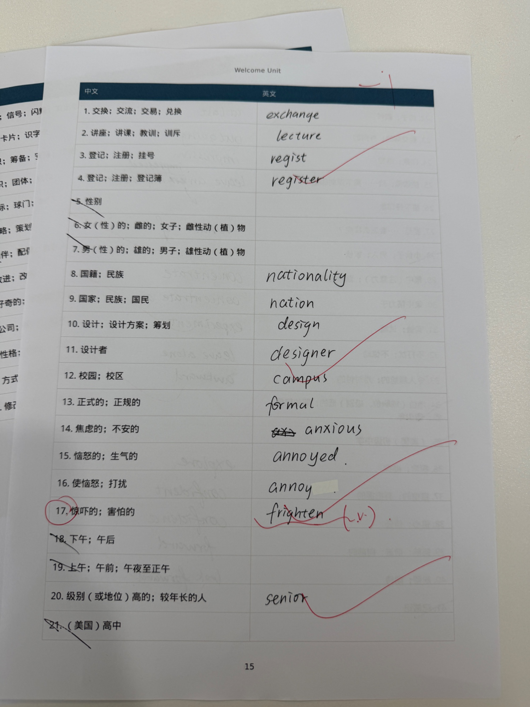
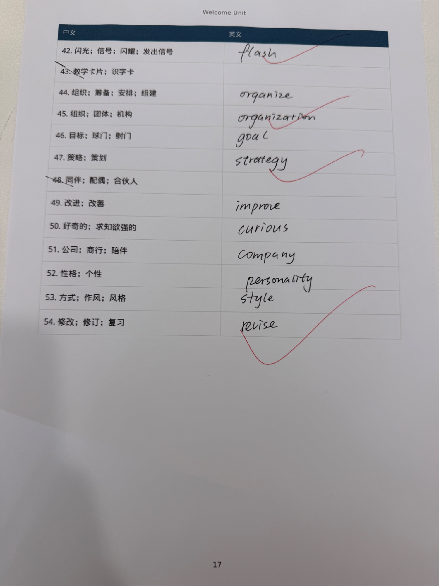

CLASSROOM FEEDBACK · GAOKAO ENGLISH
今日课堂反馈
名词性从句引导词辨析 · 阅读蓝色高亮词 · 默写纠错 · 日后必盯清单
- 语法：that / what；whether / that；how / what
- 阅读蓝色高亮词 + 课堂红笔批注
- 单词默写错误与空白项订正
- 课堂原图存档
- 日后必须注意的点 + 当堂自测
一、名词性从句：that 和 what
这是今日最核心的语法。名词性从句（主语从句、宾语从句、表语从句、同位语从句）里，先看从句缺不缺成分，再选引导词。
口诀：从句完整用 that（不充当成分）；从句缺主/宾/表用 what（必须充当成分）。
| that | what | |
|---|---|---|
| 词性 | 纯连词，不充当成分 | 连接代词，必须充当成分 |
| 从句完整吗？ | 完整（主谓宾都在） | 不完整（缺主语 / 宾语 / 表语） |
| 含义 | 无实义，只起连接作用 | = the thing(s) that「所……的东西」 |
| 能省略吗？ | 宾语从句中常可省 | 永远不能省 |
| 能引导定语从句吗？ | 可以（that 作关系代词） | 不能。定语从句用 which / that / who |
I know that media literacy is essential.
从句 media literacy is essential 主系表齐全 → 用 that。
从句 media literacy is essential 主系表齐全 → 用 that。
I know what media literacy means.
means 是及物动词，后面缺宾语 → 用 what 来充当宾语。
means 是及物动词，后面缺宾语 → 用 what 来充当宾语。
✗ I know what media literacy is essential.
从句已经完整，what 没有位置可坐。
从句已经完整，what 没有位置可坐。
✗ I know that media literacy means.
means 缺宾语，that 又不能充当成分，句子残缺。
means 缺宾语，that 又不能充当成分，句子残缺。
今日阅读原句：Officials say (that) this is the worst flooding the region has seen in years.
say 后面的从句完整，用 that，口语/新闻里常省略。Environmental agencies warn that flooded factories could cause pollution. 这里 that 写出更正式，不能换成 what。
say 后面的从句完整，用 that，口语/新闻里常省略。Environmental agencies warn that flooded factories could cause pollution. 这里 that 写出更正式，不能换成 what。
再记两句主语从句：
That media literacy is essential is obvious.（that 在句首不能省）
What students need is the tools to think critically.（what 作 need 的宾语）
二、whether 和 that：语境完全不同
很多同学一看到宾语从句就填 that。错。先问自己：后面说的是一件确定的事，还是「是否」这件事？
口诀：确定的陈述用 that；不确定的「是否」用 whether（或 if）。
| that | whether | |
|---|---|---|
| 含义 | 陈述一件确定的事 | 表示是否，两可、未知 |
| 常见前词 | say / believe / know / warn / note / think | wonder / ask / not sure / doubt / decide |
| or not | 不能加 | 可以：whether … or not |
| 语气 | 把内容当事实说出来 | 还在问、还在选 |
Officials say that this is the worst flooding.
官方在宣布事实。
官方在宣布事实。
Officials are not sure that this is the worst flooding.
既「不确定」又用 that，语气打架。
既「不确定」又用 that，语气打架。
Officials are not sure whether this is the worst flooding or not. → 还没确认。
I don't know whether the headline is reliable. ← 对应阅读里的问题 Is this information reliable?
极危险的语义差：
I didn't know that he had left. = 他已经走了，我当时不知道。（事实成立）
I didn't know whether he had left. = 他走没走，我当时不清楚。（事实未定）
考试里一换词，整句意思就反了。
I didn't know that he had left. = 他已经走了，我当时不知道。（事实成立）
I didn't know whether he had left. = 他走没走，我当时不清楚。（事实未定）
考试里一换词，整句意思就反了。
whether 和 if 也要分清（日后必考）：
- 介词后面只用 whether：worried about whether they can be rescued
- 不定式前面只用 whether：decide whether to stay or leave
- 主语从句放句首只用 whether：Whether the warning was accurate is still unknown.
- discuss / the question of 后倾向 whether
- 宾语从句里很多时候 whether / if 都能用：I wonder whether/if the information is reliable.
三、how 和 what
今日两篇阅读的题干正好一对：一道问 how，一道问 what。不要靠语感蒙，看它问的是方式还是内容。
口诀：how = 怎样 / 多么（方式、程度）；what = 什么（内容、事物）。how 后常接形容词或副词；what 后常接名词，或单独作成分。
| how | what | |
|---|---|---|
| 问什么 | 方式、方法、程度、样子 | 内容、事物、身份、种类 |
| 结构 | how + 句子；how + adj./adv.；how to do | what + 名词；what 作主/宾/表；what to do |
| 今日原题 | How can teachers best stimulate students' curiosity? | What is the primary purpose of teaching media literacy? |
understanding how media works → 媒介是怎样运作的（机制、方式）
understanding what the message is → 这条信息是什么（内容）
you're demonstrating to students how to think critically → 示范怎样批判性思考
What facts are emphasized or ignored? → what + 名词 facts，问「哪些事实」
how to 和 what to 不要混：
I don't know how to evaluate the source. = 不知道怎么评估。
I don't know what to evaluate. = 不知道该评估什么。
挂钩今日单词第 27 条：What if …？= 要是……会怎么样呢？
这里的 what 不是「什么东西」，而是固定句式，后面直接接从句：What if the early warning is wrong?
这里的 what 不是「什么东西」，而是固定句式，后面直接接从句：What if the early warning is wrong?
三组词一句话串起来（用今日洪水篇）：
Officials say that this is the worst flooding.（确定事实 → that）
Residents didn't know whether they could reach safety in time.（是否来得及 → whether）
They didn't know how to get out or what they should take with them.（怎么走 / 带什么）
四、阅读理解：蓝色高亮词必须会
蓝色是课堂上圈出的重点词。下面按两篇阅读整理：词性、中文、变形、以及卷面红笔补充。
练习 1 · 2026 届杭州一模阅读 A（媒体素养）
建议用时 8 分钟，课堂实际约 5 分钟。主旨题选 C：教媒体素养的首要目的是让学生会质疑、会评估信息，而不是只会读标题。
| 高亮词 | 词性 / 释义 | 变形与搭配 | 课堂补充 |
|---|---|---|---|
| essential | adj. 至关重要的 | n. essence 本质；It is essential that … | 红笔：essence |
| misleading | adj. 误导性的 | v. mislead；a misleading headline | 和 helpful 对举 |
| evaluate | v. 评估、评价 | n. evaluation；evaluate a source | analyze, question, and evaluate |
| perspectives | n. 视角、立场 | from different perspectives | 比较两则材料时必用 |
| emphasized | v. 被强调 | n. emphasis；put emphasis on | 反义：neglect / overlook 忽视 |
| bias | n. 偏见 | adj. biased；without bias | 卷面已注「偏见」 |
| demonstrating | v. 示范、展示 | n. demonstration；demonstrate how to … | 红笔：演示 |
| stimulate | v. 激发、刺激 | stimulate curiosity / interest | 第 23 题：best stimulate |
Media literacy isn't just a nice-to-have skill — it's essential. Students are surrounded by messages: some helpful, others misleading. Teaching them to analyze, question, and evaluate gives them tools to think critically.
Compare two texts from different perspectives. What facts are emphasized or ignored（= neglect / overlook）? This teaches bias and point of view. When you say "Let's figure out where this came from," you're demonstrating how to think critically.
第 23 题 How can teachers best stimulate students' curiosity? 最佳策略是 Show, don't just tell（做出来给学生看，而不是只口头说）。这正是 demonstrating 那一句的同义改写。
练习 2 · 2026 届浙江强基联盟阅读 A（得州洪灾）
第 21 题：Which county was most severely affected? 选 A. Hunt。看表：经济损失 $28 million、受损建筑 85 栋，两项都是最高。阅读图表题先比数字，不要凭感觉。
| 高亮词 | 词性 / 释义 | 变形与搭配 | 课堂补充 |
|---|---|---|---|
| Officials | n. 官员 | official adj. 官方的；Officials say that … | 后面接 that 从句 |
| Casualties | n. 伤亡人员 | casualty 单数；heavy casualties | 小标题 1：伤亡与救援 |
| isolated | adj. 被隔绝的 | v. isolate；n. isolation | isolated communities 孤岛式社区 |
| issued | v. 颁布、发布 | issue a declaration / warning；n. issue 问题 | issued an emergency disaster declaration |
| accelerating | v. 加快 | accelerate recovery；n. acceleration | 红笔：= boost |
| locating | v. 定位、找到 | locate the missing campers | delayed locating = 耽误了搜寻 |
The floods have killed 24 people, and 25 campers remain missing. Emergency crews have rescued 237 people（红笔划出的完成时结果）。Rescue teams struggled to reach isolated communities. Governor Abbott issued an emergency disaster declaration, accelerating（= boost）state funding. Communication outages delayed locating missing campers.
语法回扣：Officials say that this is the worst flooding. / agencies warn that flooded factories could cause pollution. 两句都是「权威方 + 陈述事实」，引导词是 that 不是 whether，也不是 what。
五、单词默写：错的必须改掉
红叉、圈词、写错词，全部收录。对的不重复讲；空白且被老师划掉的词标为「暂不要求」，没划掉的空白要补上。
Unit 1 Teenage Life · 必须订正
| 题号 | 中文 | 你的答案 | 正确写法 | 为什么错 |
|---|---|---|---|---|
| 7 | 温室效应 | greenhouse effection | greenhouse effect | effect 是名词「效应」。没有 effection 这个词。affect 才是动词「影响」；affection 是「喜爱」。 |
| 15 | 说得流利；精通 | influence | fluent; be fluent in; proficient / be proficient in | influence = 影响，词义完全跑偏。流利用 fluent，精通用 proficient。 |
| 21 | 承担……的责任 | take responsibility with sth | take responsibility for sth | 和第 20 条 be responsible for 是同一介词。记住：责任相关一律 for。 |
| 23 | 日程安排 | schedule | schedule / arrangement | schedule 对；老师补了 arrangement，两个都要会。 |
| 26 | 某方面的专家 | an expert at | an expert in + 领域 an expert at + 技能 / doing |
「某方面」是领域，优先 in：an expert in biology。at 更像 an expert at cooking。 |
| 29 | 被……吸引 | be attracted in | be attracted to / by | 第 28 条 attract one's attention 你写对了。被动「被吸引」换介词：to 或 by，绝不是 in。 |
已经写对、继续保持：prefer A to B；confuse A with B；be suitable for；sign up for；quit doing sth.；the solution to the problem；concentrate on；be addicted to；behaviour（英式拼写按要求）。
尤其记住 confusing（修饰物）/ confused（修饰人） 这一组，下面 Welcome Unit 的 frighten 是同一套路。
尤其记住 confusing（修饰物）/ confused（修饰人） 这一组，下面 Welcome Unit 的 frighten 是同一套路。
Welcome Unit · 必须订正与补全
| 题号 | 中文 | 你的答案 | 正确写法 | 说明 |
|---|---|---|---|---|
| 3 | 登记；注册；挂号 | regist | register（v.） | 漏了 -er。register for a course 报名选课。 |
| 4 | 登记；注册；登记簿 | register | register（n.） | 名词「登记簿」也是 register。和第 3 条同形：一词多性。 |
| 17 | 惊吓的；害怕的 | frighten（v.） | frightening（修饰物） frightened（修饰人） |
中文是形容词。动词 frighten = 使害怕。对照 confusing / confused。 |
| 25 | 使钦佩；给……留下深刻印象 | leave an impression on | leave / make an impression on sb impress sb；be impressed by |
短语对。老师补了 impressed：人作主语用 be impressed。 |
| 26 | 留下好印象 | （空） | leave / make a good impression | 第 25 条的正向说法，要补上。 |
| 40 | 盼望；期待 | look forward | look forward to (doing) sth | 缺介词 to。to 是介词，后面加名词或 doing，不加原形动词。 |
| 5–7 | 性别 / 女 / 男 | （空） | gender / female / male | 课堂可能跳过，考试仍可能出现，建议补背。 |
老师划掉、暂不作为默写要求：afternoon；morning；high school；小伙子 guy；junior；junior high；take notes；flashcard；partner。
不是永远不学，只是这一轮先集中火力打高频词。
不是永远不学，只是这一轮先集中火力打高频词。
Welcome Unit 已写对的，用来带动错词：
exchange；lecture；nationality；campus；formal；anxious；annoyed / annoy；outgoing；impression；What if …；concentrate on；experiment；leave alone；awkward；explore；confident / confidence；forward；flash；organize / organization；goal；strategy；improve；curious；company；personality；style；revise。
六、课堂原图存档
原卷与默写纸拍照，便于对照笔迹和老师红笔。语法讲解以正文为准，图中若有反光或裁切，以本讲义文字订正。





七、日后必须注意的点
不是「再看一遍笔记」，而是下次做题、默写时主动拦截的习惯。建议逐条打勾。
- 名词性从句先查成分。把引导词遮住，从句还完整吗？完整 → that；缺主/宾/表 → what。不要凭中文「什么」就填 what。
- that 不等于 whether。say / warn / note 后多半是 that（宣布事实）。not sure / wonder / ask 后才是 whether（是否）。换一个词，句子真假都可能变。
- how 问方式，what 问内容。how to do = 怎么做；what to do = 做什么。阅读题干 How …？看方法；What …？看目的、对象、事实。
- 介词不要凭中文硬译。责任 for，吸引 to/by，专家 in（领域），solution to，look forward to，prefer A to B，confuse A with B。默写错的全是介词，不是单词不会。
- 拼写陷阱单独过。effect ≠ affect ≠ affection ≠ 不存在的 effection；register 不是 regist。
- -ing / -ed 形容词成套记。confusing / confused；frightening / frightened；annoying / annoyed。物用 -ing，人用 -ed。中文写「……的」时先问：修饰人还是物？
- 近义词别串台。influence 是影响，fluent 才是流利。essential 的名词是 essence。emphasized 的反义课堂已给：neglect / overlook。
- 阅读蓝色词要会「变形」。evaluate → evaluation；demonstrate → demonstration；isolate → isolation；issue 既是动词「颁布」也是名词「问题」。
- 图表题先比数字。most severely affected = 损失金额 + 受损数量都最高的那一县。Hunt $28 million / 85 buildings。
- 完成时在新闻里表结果。have rescued 237 people = 到目前为止已经救出。搜救还在继续（remain missing）并不矛盾。
- 权威发言 = that 从句。Officials say that …；agencies warn that …。写作里也可以模仿，显得客观。
- 媒体素养三问记住就能做主旨题：信息可靠吗？从哪来？缺了什么？目的是培养 critical thinking，不是让学生当记者。
下次默写前 60 秒自查
- greenhouse effect
- be fluent in；be proficient in（绝对不是 influence）
- take responsibility for；be responsible for
- an expert in …
- be attracted to / by
- register；look forward to doing
- frightening / frightened
- leave a good impression on sb
八、当堂 6 题自测（先做再看答案）
1. Students finally understood ______ media literacy really means.
答案：what（means 缺宾语）
2. Officials say ______ this is the worst flooding in years.
答案：that（或省略。陈述确定事实，不能用 whether / what）
3. Rescue teams were not sure ______ they could reach the isolated communities before night.
答案：whether / if（是否赶得上，未知）
4. The teacher is demonstrating to us ______ to evaluate a misleading headline.
答案：how（示范「怎样」评估）
5. ______ facts are emphasized or overlooked often shows the writer's bias.
答案：What（what + 名词 facts）
6. 改错：She is an expert at climate change and was attracted in the lecture.
答案：an expert in climate change；was attracted to / by the lecture